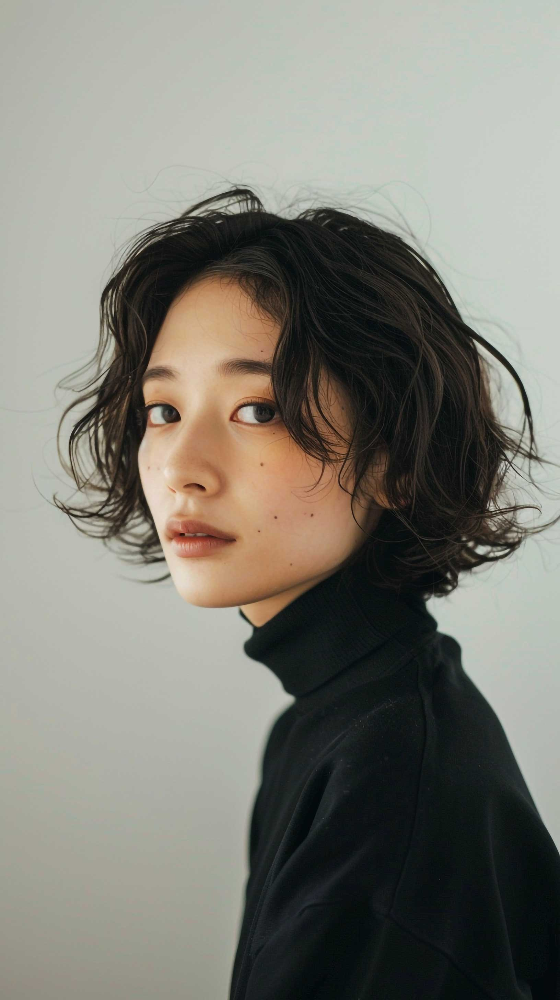

Profileプロフィール
※当サイトはデモサイトです
経歴
地元東京の美術大学で写真学を専攻し、数年間アシスタントフォトグラファーとしての経験を積んだ後、独立してフリーランスの写真家としての活動を開始しました。国内外での展示会への参加や、様々な雑誌への寄稿を通じて、独自の視点と技術が徐々に認知されてきました。
使用する機材
CanonとNikonのデジタル一眼レフカメラをメインに使用しています。特に、風景撮影では広角レンズを好んで使用し、ポートレートには中望遠レンズを使用して、被写体の特徴を引き出しています。また、古いフィルムカメラも愛用し、デジタルとアナログの技術を融合させた作品作りを心がけています。
撮影スタイル
自然光を活かした柔らかく温かみのある写真が特徴です。日常の中にある非日常的な瞬間を捉えることを得意とし、その瞬間の感情や雰囲気を大切にしています。人物撮影では、被写体と深く対話することで、その人ならではの表情や姿を引き出すことに注力しています。
撮影スタイル
自然光を活かした柔らかく温かみのある写真が特徴です。日常の中にある非日常的な瞬間を捉えることを得意とし、その瞬間の感情や雰囲気を大切にしています。人物撮影では、被写体と深く対話することで、その人ならではの表情や姿を引き出すことに注力しています。

Profileプロフィール
使い方。
上のブロックと左右逆にしたい場合、
<div class="c2">
を、
<div class="c2 reverse">
にして下さい。
その場合、h2見出しも右側に寄せたいなら、
<h2><span class="hosoku fade-in-text">Profile</span><span class="blur">プロフィール</span></h2>
を、
<div class="r">
<h2><span class="hosoku fade-in-text">Profile</span><span class="blur">プロフィール</span></h2>
</div>
にして下さい。ここの見出しもこの設定が入っています。
写真のフチ
上のブロックだと、写真のフチをぼかすスタイルがついていますが、不要なら、
<p class="box-shadow-inset">
を、単に、
<p>
だけにして下さい。
ここの写真はぼかすスタイルを削除したタイプです。